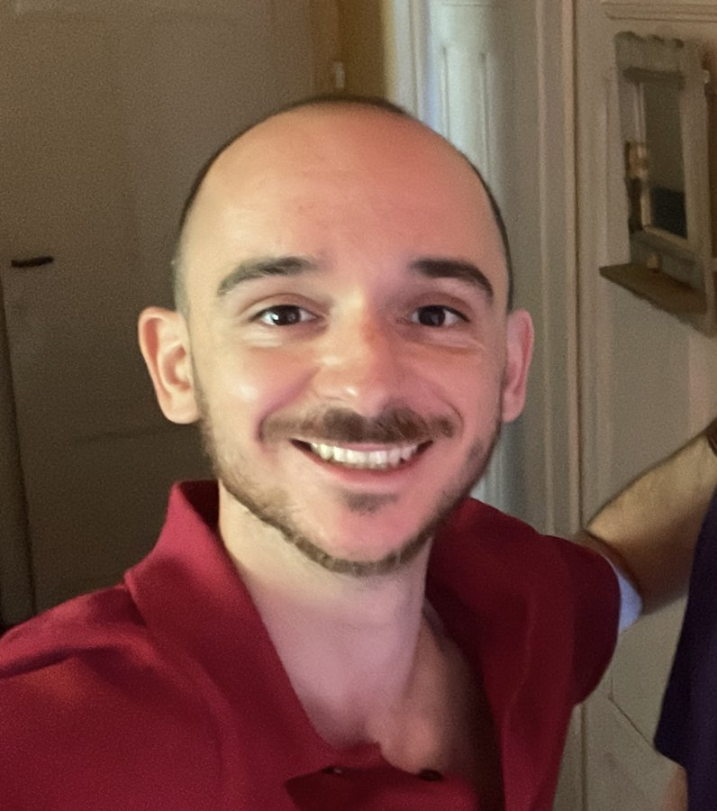

N° 01
Klorys
Le catalogue botanique de La Réunion : plus de 1 000 espèces, endémiques, indigènes ou exotiques, cherchables en un instant. Pensé pour les paysagistes et les pépinières.
Ruby on Rails · PostgreSQL · Algolia
J'ai passé dix ans à faire tourner des procédés chimiques. Aujourd'hui je construis des outils : des données, du code, et des petites applications qui règlent de vrais problèmes. Cette page est mon carnet.

Ingénieur chimiste (ENSIC Nancy), spécialisé procédés à l'IFP School. J'aime comprendre comment les choses fonctionnent, vraiment.
LyondellBasell, programme Emerging Leader : ingénieur procédés, mise en service d'unités, planification supply, puis responsable des opérations commerciales. Six ans aux Pays-Bas, à apprendre à décider avec des données.
Bootcamp développement web : Ruby on Rails, JavaScript, et le plaisir de livrer quelque chose qu'on peut utiliser le soir même.
Senior Data Analyst sur les sites de caoutchouc synthétique : pipelines, dashboards, qualité de données, et un peu d'IA générative pour les équipes.
Trois prototypes, trois vidéos de vingt secondes. Chaque vidéo est générée en code à partir de vraies captures de l'application, avec sa propre musique synthétisée.
Le catalogue botanique de La Réunion : plus de 1 000 espèces, endémiques, indigènes ou exotiques, cherchables en un instant. Pensé pour les paysagistes et les pépinières.
Ruby on Rails · PostgreSQL · Algolia
Trois amis, trois villes : l'app compare les vrais prix de vols et trouve la ville la moins chère pour tout le monde.
Rails 8 · Hotwire · Duffel API · Mapbox
Un journal de croissance pour plantes d'intérieur : photos, soins, XP et stades. Mes vraies plantes servent de cobayes.
Rails 8 · Active Storage · Tailwind
prototype privé
En cherchant un appartement, j'ai voulu voir les plans de vente autrement. J'ai donc écrit un moteur qui transforme un plan PDF en maquette 3D visitable dans le navigateur, avec l'ensoleillement réel selon l'orientation. Huit lots du programme Cap Ouest (Carcans) sont en ligne.
Je suis preneur d'un échange sur la data industrielle, Rails, ou une idée à prototyper.